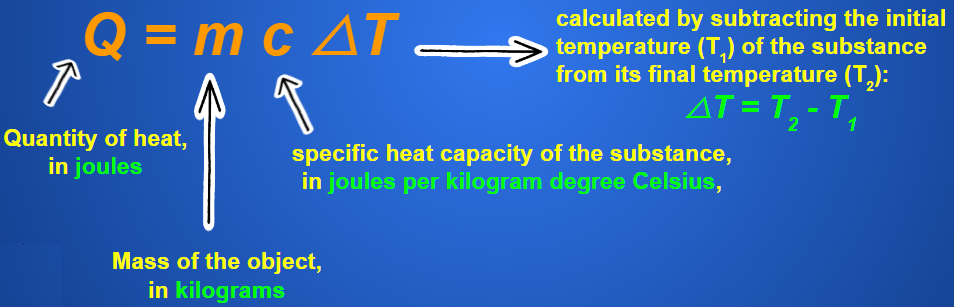
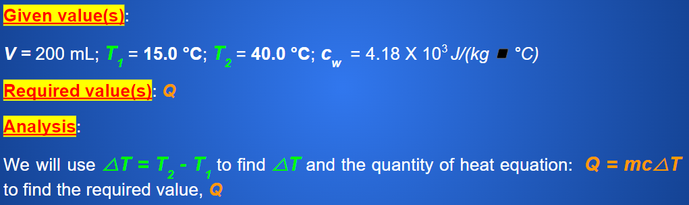
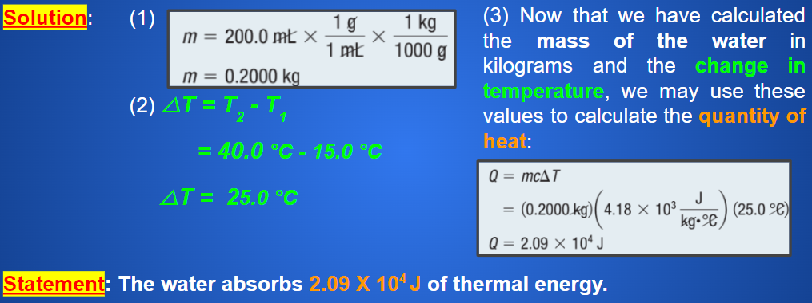
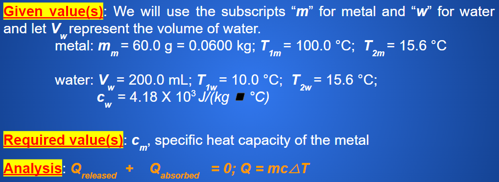
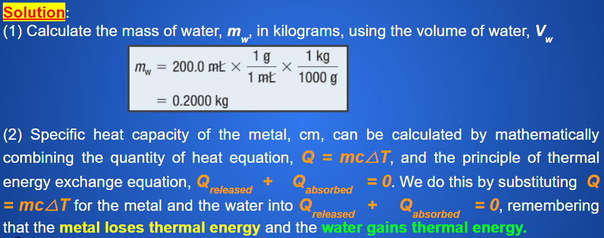
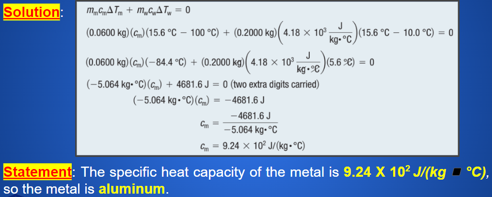

Heat Capacity
Callout
Specific Heat Capacity
The amount of energy, in joules, required to increase the temperature of 1 kg of a substance by 1 °C
units are J/(kg◾°C)

Specific Heat Capacities of Common Substances
Quantity of Heat (Q)
the amount of thermal energy transferred from one object to another

Callout
Note that if an object absorbs energy, its final temperature is greater than its initial temperature, and the value of △T is positive.
However, if an object releases thermal energy, its final temperature is lower than its initial temperature, and the value of △T is negative.
Example
When 200.0 mL of water is heated from 15.0 °C to 40.0 °C, how much thermal energy is absorbed by the water?
(1) Determine the mass, in kilograms, of 200.0 mL of water. Use the density of water, which is 1.0 g/mL.
(2) Calculate the change in the temperature of the water using the equation:
△T = T2 - T1.
(3) Use the quantity of heat equation, Q = mc△T, along with the mass of the water, m, the specific heat capacity of water, cw, and the change in temperature of the water,△T, to determine how much thermal energy is absorbed by the water.


Practice
An empty copper pot is sitting on a burner. The pot has a mass of 1.2 kg and is at a temperature of 130.0 °C. If the pot cools to a room temperature of 21.0 °C, how much thermal energy does it release to the surroundings?
Callout
Principle of Thermal Energy Exchange
When thermal energy is transferred from a warmer object to a colder object, the amount of thermal energy released by the warmer object is equal to the amount of thermal energy absorbed by the colder object.
Thermal energy, like all other forms of energy, cannot be destroyed; it can only be transferred or transformed.

Callout
Example
A 60.0 g sample of metal is heated to 100.0 °C before being placed in 200.0 mL of water with an initial temperature of 10.0 °C. The metal–water combination reaches a final temperature of 15.6 °C. Determine the identity of the metal.


Callout
Practice
A sample of iron is heated to 80.0 °C and placed in 100.0 mL of water at 20.0 °C. The final temperature of the mixture is 22.0 °C. What is the mass of the iron?
During an investigation, 200.0 g of silver is heated to 90.0 °C. The hot silver is then placed into 300.0 g of ethyl alcohol that has an initial temperature of 5.0 °C. Determine the final temperature of the silver–alcohol mixture.
Thermal Expansion vs Thermal Contraction
the expansion of a substance as it warms up
Thermal Contractionthe contraction of a substance when it cools down
Bridges have expansion joints to allow expansion during hot temperatures and contraction during cold temperatures.